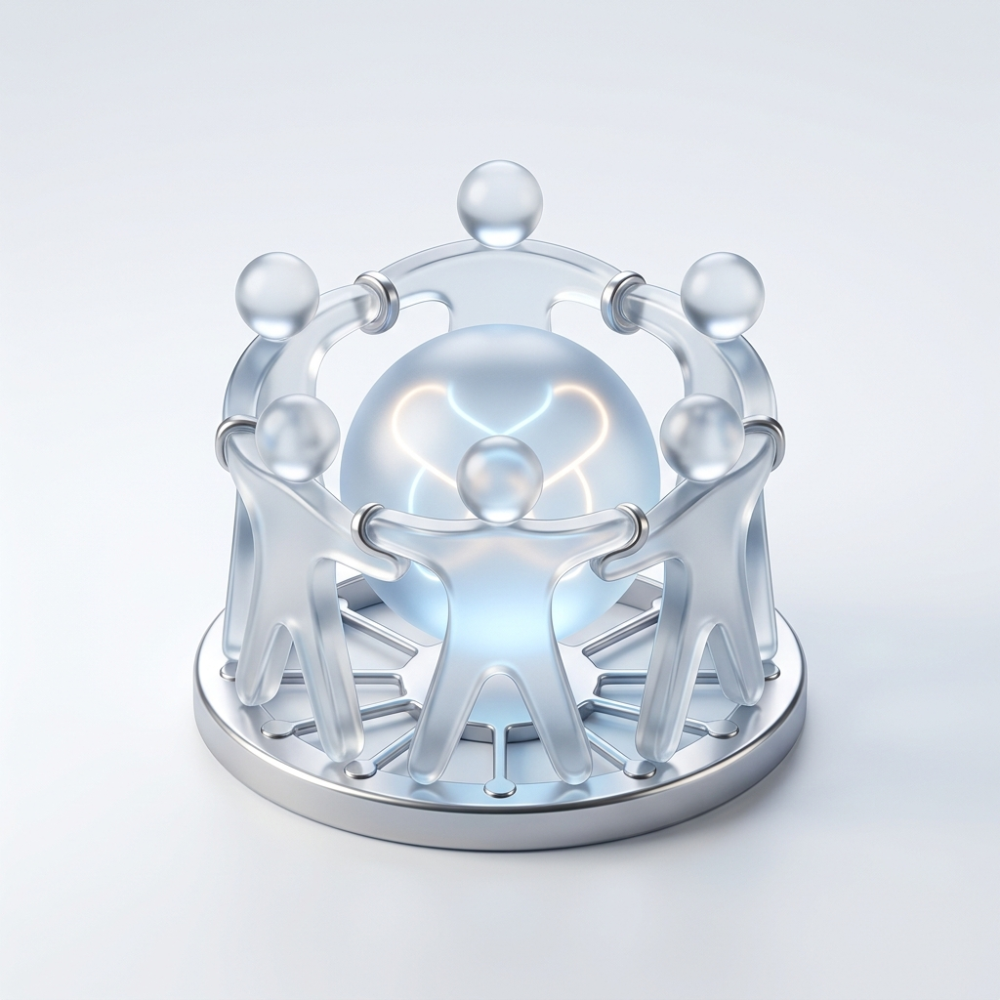

2019
Langkah Awal (PTLS)
-
Ekspansi Operasional: PT Pelabuhan Terakhir Langgeng Sejahtera (PTLS) resmi beroperasi di Surabaya, membangun fondasi logistik dan distribusi yang tangguh.
-
Pusat Komunitas: Membuka Kantin PTLS di Jalan Lombok No. 22, Surabaya, sebagai titik awal kolaborasi dan relasi sosial yang erat.
